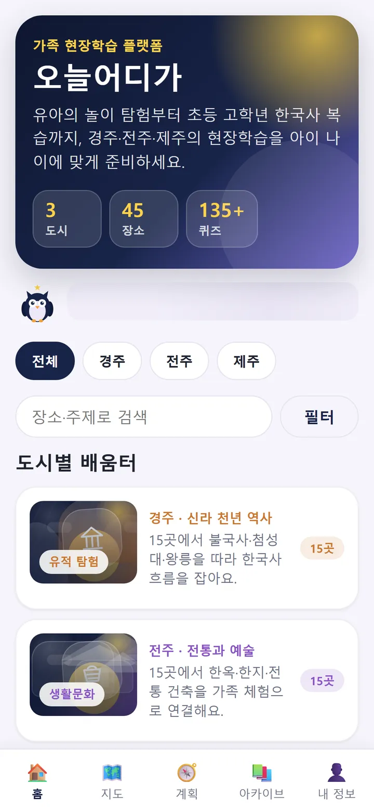
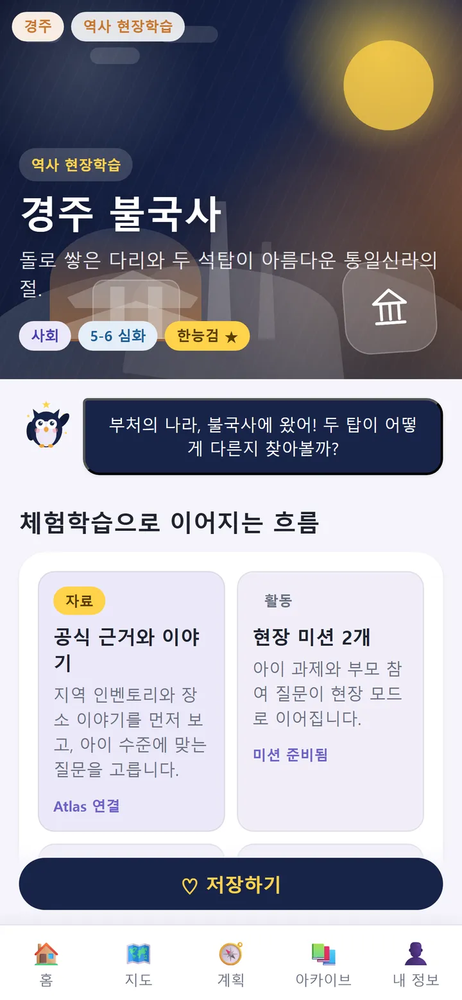
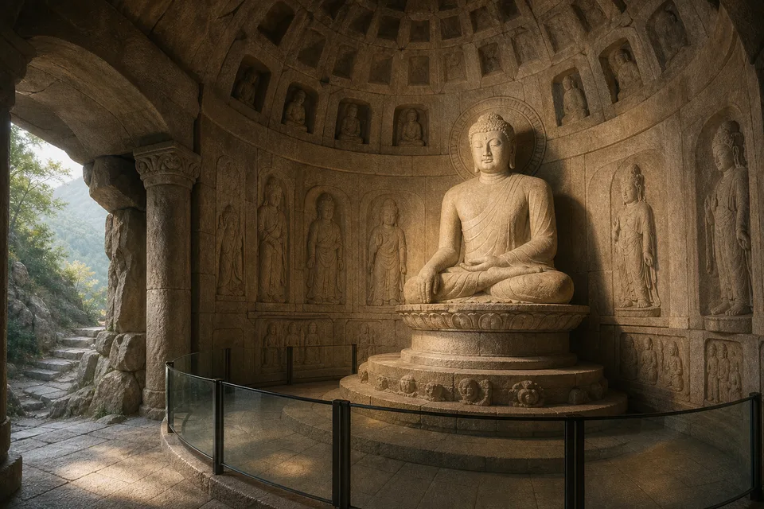

“우리 아이 학년에 맞게 보기”를 누를 때
홈페이지는 예시만 보여 주고, 유아·저학년·고학년 맞춤 설명은 앱에서 이어지게 합니다.
오늘어디가는 경주·전주·제주의 하루를 아이 나이에 맞는 체험학습으로 바꾸는 앱입니다. 홈페이지에서는 핵심 경험만 가볍게 시연하고, 실제 기록과 현장 기능은 앱에서 이어집니다.


방문자는 장소 선택, 현장 미션, 복습·보고서 흐름을 짧게 이해합니다. 사진 기록·위치 기반 진행·저장·보고서 생성처럼 아이의 실제 활동이 들어가는 기능은 앱 설치 후 이어집니다.
돌로 쌓은 다리와 두 석탑이 아름다운 통일신라의 절.
홈페이지는 사용자가 앱의 가치를 납득할 만큼만 보여 줍니다. 아이별 추천, 현장 기록, 보고서 저장처럼 실제 체험학습 데이터가 필요한 순간에는 설치 안내로 전환합니다.
앱 테스트 참여 안내 보기홈페이지는 예시만 보여 주고, 유아·저학년·고학년 맞춤 설명은 앱에서 이어지게 합니다.
카메라, 위치, 오프라인팩, 저장 기능이 필요한 지점이므로 앱 설치 가치가 자연스럽게 생깁니다.
학교 제출용 기록과 복습 자료는 앱 안의 실제 활동 데이터를 바탕으로 생성하도록 남겨 둡니다.
운영 주체, 앱 가치, 콘텐츠 범위, 테스터 모집 안내를 설탕과소금 홈페이지에서 보여 줍니다.
카메라, 오프라인 여행팩, 알림, 보고서·전자책 생성은 설치형 앱의 본 기능으로 유지합니다.
웹에서 “괜찮아 보인다”를 만들고, 실제 활동이 필요한 순간 앱 설치 또는 테스트 참여로 연결합니다.
실제 앱에는 경주·전주·제주 45곳의 장소 이야기, 미션, 퀴즈, 한국사 연결이 들어갑니다.
통일신라의 석탑과 세계유산 이야기

불상과 돔 구조, 과학적 설계 관찰
신라의 별 관찰과 과학 탐구
왕궁 정원과 신라 생활문화
경주·전주·제주의 가족 체험학습을 직접 살펴보고, 비공개 테스트 참여 시점과 설치 방법을 문의로 받아보세요.